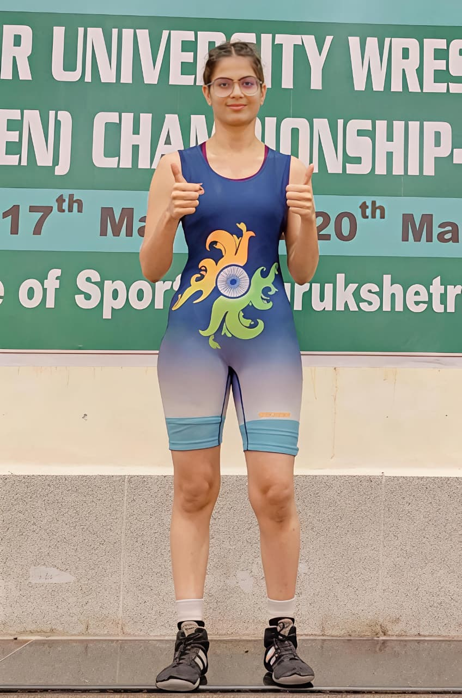

Rashi Yadav
I am a BTech CSE student and an aspiring full stack developer. I enjoy turning ideas into interactive, user-friendly products. When I’m not coding, you’ll find me on the wrestling mat pushing my limits.
I build responsive and user-friendly web applications from front-end design to back-end logic. I focus on writing clean code and creating smooth user experiences.
I enjoy blending creativity with logic to design experiences that are not just functional but also visually engaging and intuitive for users.
Wrestling has taught me discipline, resilience, and consistency — the same mindset I bring to learning, coding, and overcoming challenges.
Tools & traits I carry everywhere
Selected Work
A few things I've built recently.
My Journey
The foundations that shaped who I am as a developer and a person.
K R Mangalam University
Currently pursuing my degree in Computer Science with a focus on full stack development. Building a strong foundation in programming, data structures, and developing real-world web projects.
Rao Bharat Singh International School
Completed my higher secondary education with a focus on analytical thinking and problem-solving, which laid the foundation for my interest in technology and computer science.
Kendriya Vidhalaya Sanghathan
Built a strong academic base and developed discipline, consistency, and a learning mindset that continues to support my growth today.

Beyond the Screen
Before I ever wrote a line of code, I was on the mat. Wrestling taught me something no classroom could — how to stay calm when everything is against you, how to get back up after a loss, and how to push past the point where most people stop.
That same grit lives in every project I build. When a bug won't budge or a deadline is closing in, I don't fold. I dig in.